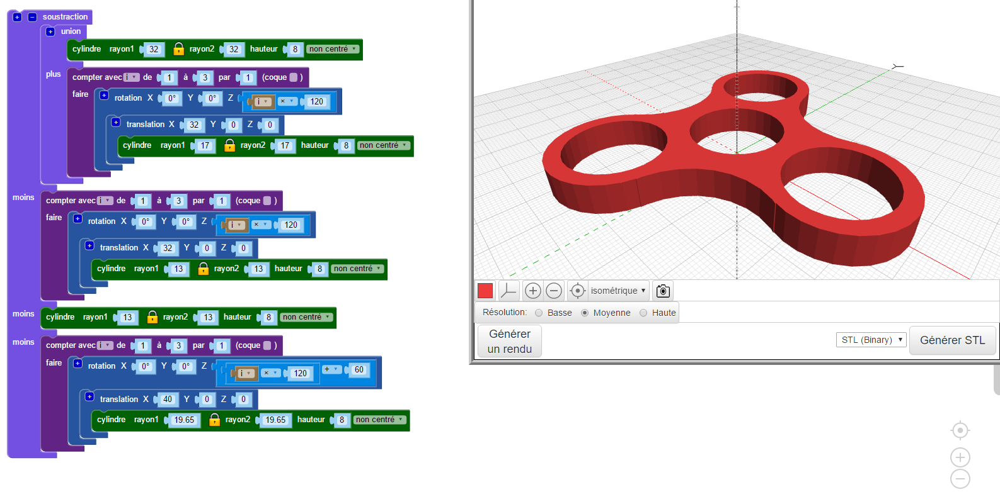

BlocksCAD :#

BlocksCAD permet de générer des modèles 3D de pièces avec la programmation graphique par blocs :

Activité découverte#
Le casse tête du casse tête :
Le problème qu'il nous faut résoudre dans cette activité, tient au fait que nous ne disposons au laboratoire de SI que d'un exemplaire matériel d'un petit jeu de casse-tête :
Or un des pions rouges est égaré, nous pourrions alors le reproduire, mais nous sommes nombreux à vouloir y jouer au même moment, c'est donc plusieurs jeux qu'il nous faut faire...
Défin n°1#
Modéliser un pion avec BlocksCAD
A l'adresse https://www.blockscad3d.com/editor/. Dans la barre de menu, sous l'icone en forme de "planète", choisir la langue : Français. Puis cliquer sur le bouton "Créer un compte".
Créer un compte en utilisant un pseudo "correct", le mot de passe de votre choix, et votre adresse mail : prenom.nom@eleves.ecmorlaix.fr

Source : Cyril VIGNET
Voici une proposition d'étapes à suivre pour la prise en main de BlocksCAD et la modélisation d'un pion du casse-tête.
A chaque étape, reproduire l'algorithme en glissant les blocs concernés depuis le menu vertical des fonctions jusque dans la fenêtre centrale du programme puis, régler le "Smooth" sur "High" et cliquer sur le bouton "Générer un rendu".
Il s'agit maintenant de renommer le projet, par exemple "monPion-prenom_nom", afin de l'enregistrer en cliquant sur le bouton "Sauver" ;
Enfin, il suffit de régler le format de fichier sur "STL binary" puis de cliquer sur le bouton "Générer STL" afin de télécharger un fichier du modèle exploitable pour l'imprimante 3D.
Défin n°2#
Modéliser un support imprimable
A l'aide de BlocksCAD, imaginer un modèle pour le support des pions.
Afin de recevoir les six pions du jeu tout en laissant un emplacement libre, cette pièce doit comporter sept trous cylindriques de diamètre 8mm et de profondeur 9mm, distants chacun d'un pas de 17mm.
Il sera judicieux d'utiliser une boucle de répétition.
Les autres formes du support sont libres dans la mesure où le modèle généré reste imprimable avec la printrBot.
Applications#
Défin n°3#
Domino challenge
Générer le fichier STL d'une pièce aux dimensions exactes des dominos officiels.
Défin n°4#
Pas si trivial...
Générer les fichiers STL des 6 portions "camembert" du jeu Trivial Poursuit et de leur boite support...
Défin n°5#
A vous de jouer...
Avec l'aide du guide pour BlocksCAD réalisé par Cyril VIGNET, imaginer et prototyper des pièces pour vos autres projets...